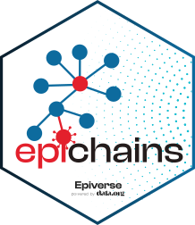

{{ packagename }}: Methods for simulating and analysing the size and length of transmission chains from branching process models 
{{ packagename }} is an R package to simulate, analyse, and visualize the size and length of branching processes with a given offspring distribution. These models are often used in infectious disease epidemiology, where the chains represent chains of transmission, and the offspring distribution represents the distribution of secondary infections caused by an infected individual.
{{ packagename }} re-implements bpmodels by providing dedicated data structures that allow easy manipulation and interoperability with other existing packages for handling transmission chain and contact-tracing data.
{{ packagename }} is developed at the Centre for the Mathematical Modelling of Infectious Diseases at the London School of Hygiene and Tropical Medicine as part of the Epiverse Initiative.
Installation
The latest development version of the {{ packagename }} package can be installed via
# check whether {pak} is installed
if(!require("pak")) install.packages("pak")
pak::pak("{{ gh_repo }}")To load the package, use
Quick start
Work in progress
Package vignettes
Specific use cases of {{ packagename }} can be found in the online documentation as package vignettes, under “Articles”.
Reporting bugs
To report a bug please open an issue.
Contribute
We welcome contributions to enhance the package’s functionalities. If you wish to do so, please follow the package contributing guide.
Code of conduct
Please note that the {{ packagename }} project is released with a Contributor Code of Conduct. By contributing to this project, you agree to abide by its terms.
Citing this package
citation("epichains")
#> To cite package epichains in publications use:
#>
#> Sebastian Funk, Flavio Finger, and James M. Azam (2023). epichains:
#> Analysing transmission chain statistics using branching process
#> models, website: https://github.com/epiverse-trace/epichains/
#>
#> A BibTeX entry for LaTeX users is
#>
#> @Manual{,
#> title = {epichains: Analysing transmission chain statistics using branching process models},
#> author = {{Sebastian Funk} and {Flavio Finger} and {James M. Azam}},
#> year = {2023},
#> url = {https://github.com/epiverse-trace/epichains/},
#> }